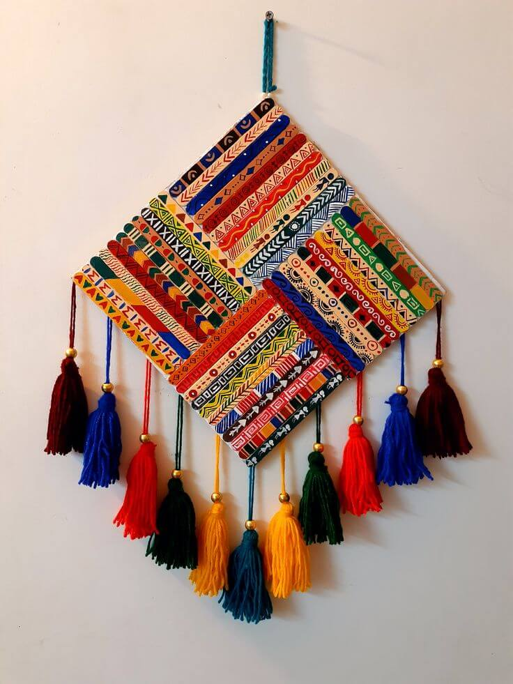
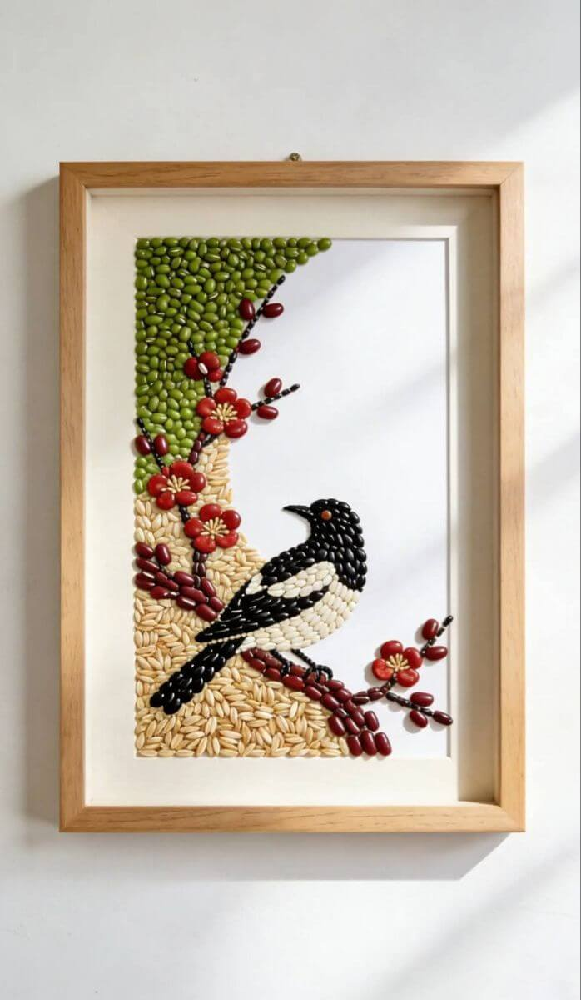
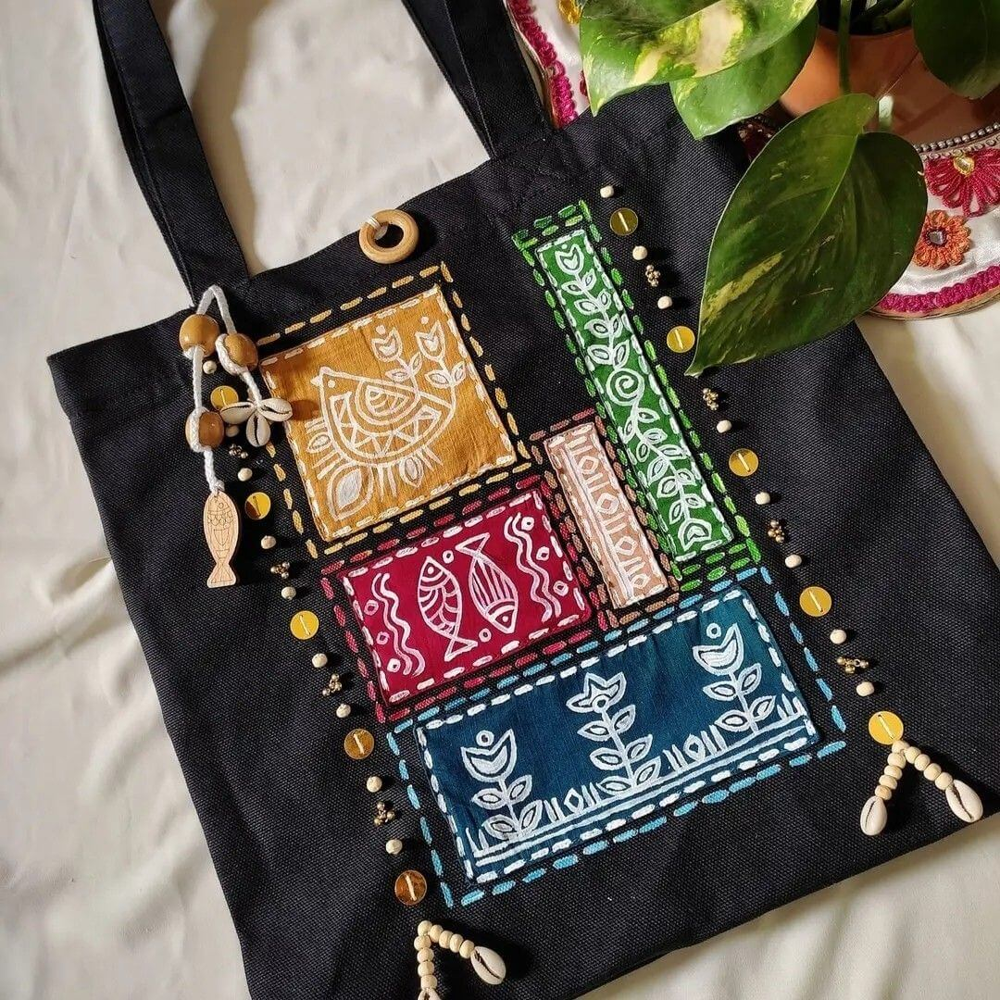
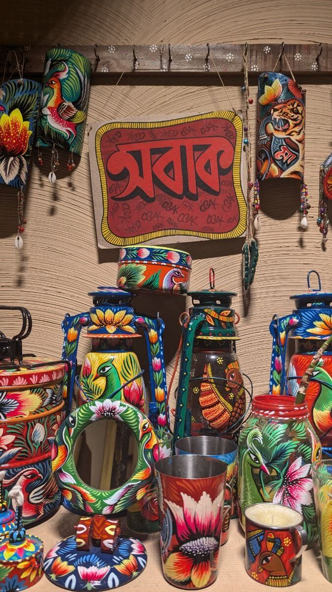

Exclusive Bangladeshi Crafts
If you like our decor, we have good news for you! We have limited supply
of handpainted crafts imported straight from Bangladesh.
The people of Bangladesh love their food as much as they love their crafts. Take
a beautiful souvenir to remember your time here with us.
The currently available crafts are: Wind Charms, Seed Painting,Hand Painted and Embroidered Tote Bags,
Rickshaw painted lamps and candles.
What are you waiting for? Order now from our limited stock!!!
What is Rickshaw Art?
Rickshaw art form is a type of art form that is authentically native to Bangladesh. The art form was once only used on manually pulled vehicles primarily used on Southern Asia which is now used in Bangladeshi Modern Arts.

Wind Charms
Multicolored Square Wind Charms.
$10.99

Seed Painting
Customizable designs with seed of different colors.
$20.99

Hand Painted and Embroidered Tote Bags
Hand Painted and Embroidered Tote Bags with beads,
organically sourced colors,and woven with jute strings.
$30.99

Rickshaw painted lamps and candles.
Hand Painted Lamps and Candles.
$40.99